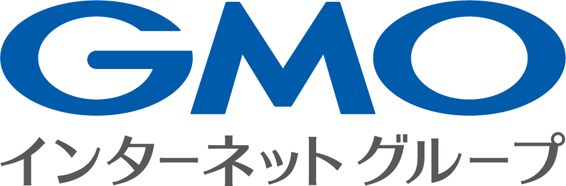
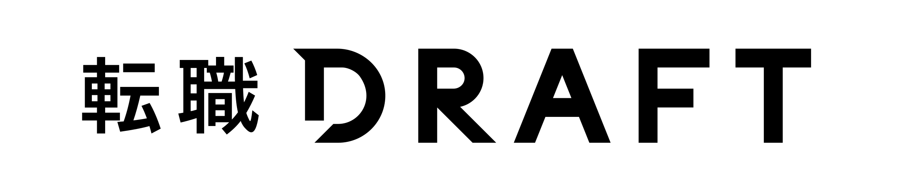
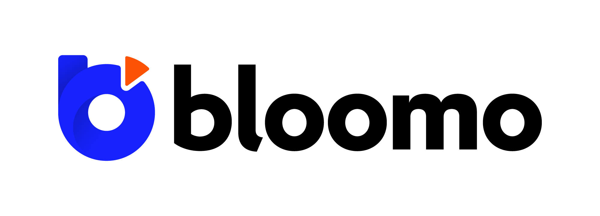
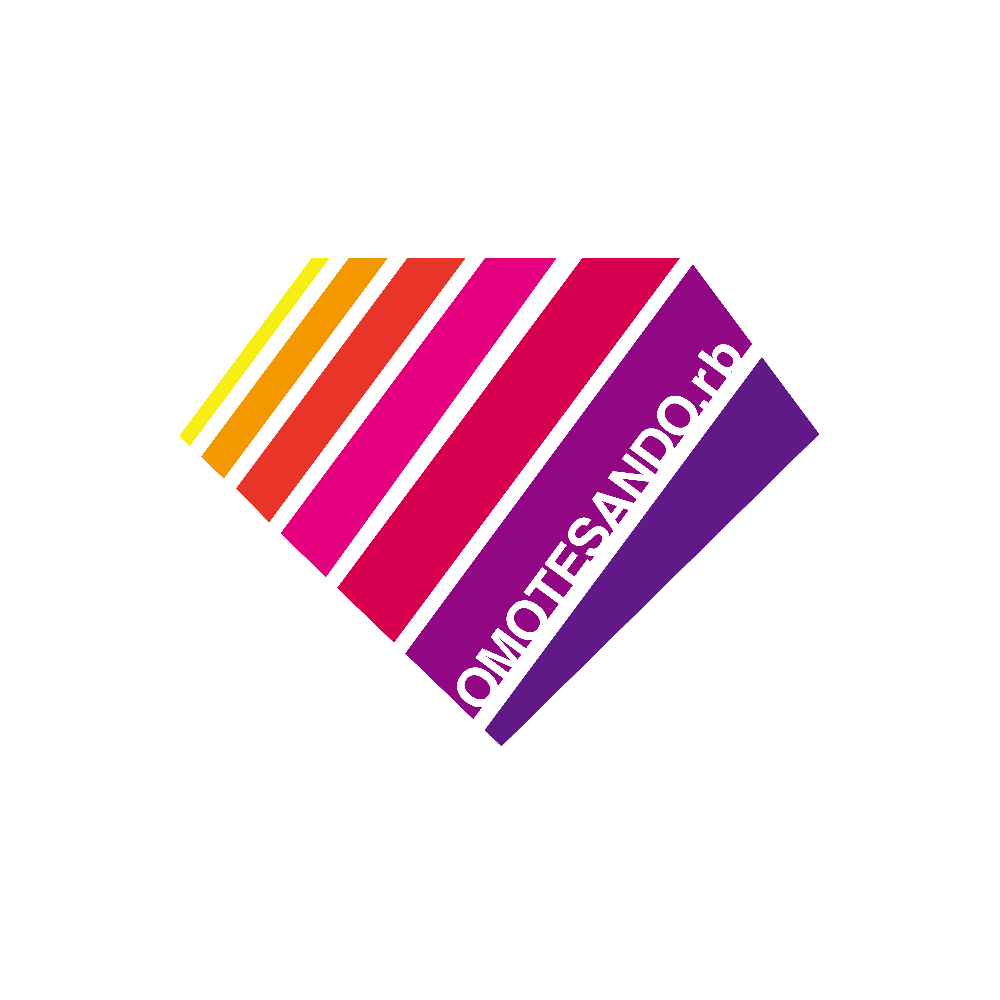
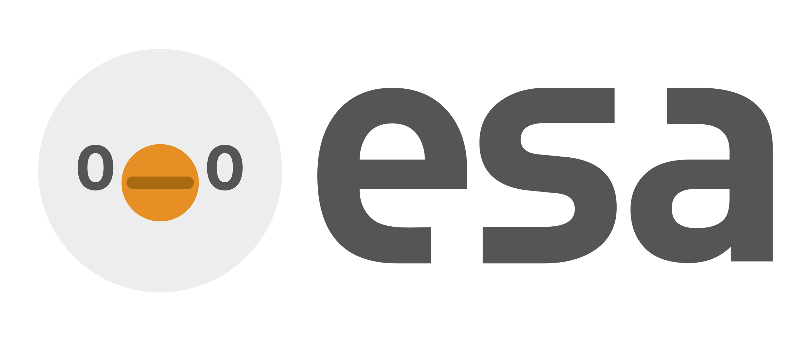

LT への応募
- 発表者募集中！
- アンチハラスメントポリシーをご一読の上、こちら からご応募下さい！
- LTの持ち時間は5分です。
- 発表内容の記入が無い方は選考対象外となりますので、ご了承ください。
- 資料は16:9での作成をお願いします。
参加登録
- 一般参加の方はお待ちください。後日こちらにリンクを記載します。
TokyuRuby会議について
- TokyuRuby会議は、東京で開催される Regional RubyKaigi です。
- Ruby に興味を持つエンジニアが集う Tokyu.rb 主催の LT 大会です。
- 飲み食いしつつ、みんなでLTをして盛り上がろうというイベントです。
- 抽選LTを実施予定です！ 抽選LT発表者の指名は抽選により、当日会場にて行います！当たるかもしれません！
- 今回も参加者のみなさんの投票により飯王、LT王を決定します！
開催日時
- 2025年11月29日(土曜日)14:00～19:30頃を予定しております。
会場
- GMOインターネットグループ グループ第２本社 GMO Yours・フクラス
- 東京都渋谷区道玄坂1丁目2番3号 渋谷フクラス 16階
参加費
- 参加費は 無料 です
座席について
- 未定
飲み物、食べ物について
- 参加者・登壇者ともに、食べ物/飲み物は持ち込み形式となります。（忘れると悲しいことになります）
- スタッフへのカンパもお待ち致しております。皆様の善意により成り立っております🙏
Q & A
- Q. アルコールは持ち込んでいいの？
- A. 歓迎です。
- Q. 何を持ち込んだらいいの？
- A. 買ってくる場合は自分が食べたいものを。なにか作られる方は、他の参加者の方に自慢したい品をお持ち下さい。
- Q. どれくらい持ち込んだらいいの？
- A. 自分が食べたい量の1〜2人分お持ち頂くと幸せになれます。自慢の料理を振る舞いたい方は、好きなだけお持ち下さい。
その他
会場設備について
- 未定
タグなど
当日のスケジュール
未定
過去の様子
RegionalRubyKaigi レポート (86) TokyuRuby会議15 レポート
スタッフ
- 実行委員長：奥谷梨沙
- 司会: 小川伸一郎
- 会計: u1tnk
- アナウンス:関学
- るびま担当:もとひろ
- maimu
- garammasala29
- 濵口昌武
Sponsors
会場スポンサー GMOインターネットグループ株式会社

ビールスポンサー 株式会社リブセンス 転職ドラフト様

スポンサー 株式会社mov様
スポンサー ブルーモ証券株式会社

スポンサー Omotesando.rb様

esaスポンサー esa LLC様

アンチハラスメントポリシーについて
TokyuRuby会議では、アンチハラスメントポリシーを定めています。イベントに参加する皆様は、以下のリンク先に書かれたポリシーを遵守するように心がけてください。非常時のアナウンスについて
もし当日に極度の荒天などの非常事態が起こった場合は、Twitterアカウント @tokyurb または Twitterハッシュタグ
#tqrk16 に開催予定などの速報を流します。適宜ご確認をお願いいたします。
お問い合わせ
TokyuRuby会議16に関するお問い合わせは、tokyurubykaigi_at_googlegroups.comまでメールにてご連絡ください。